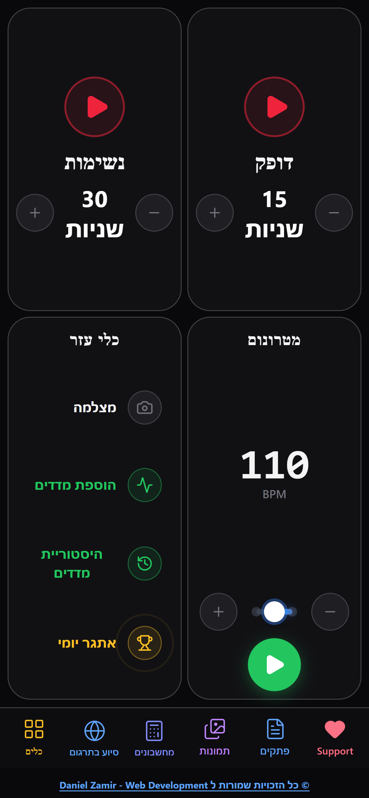
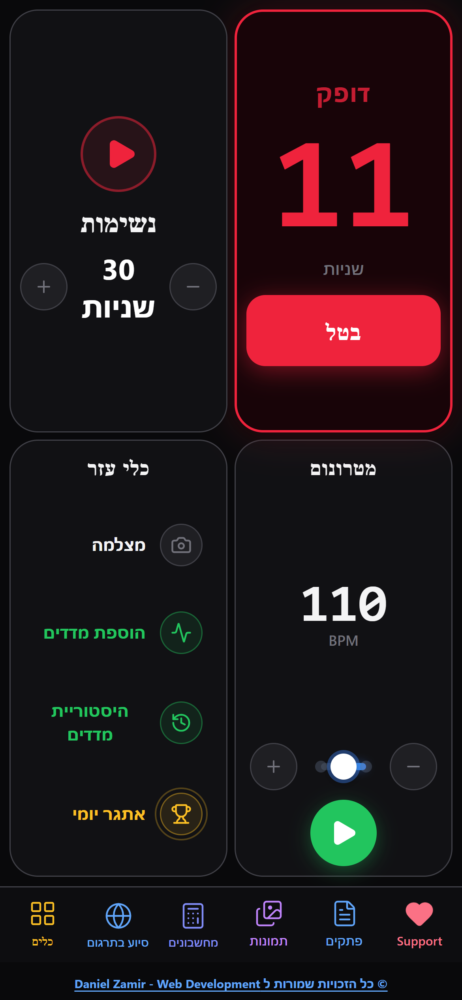
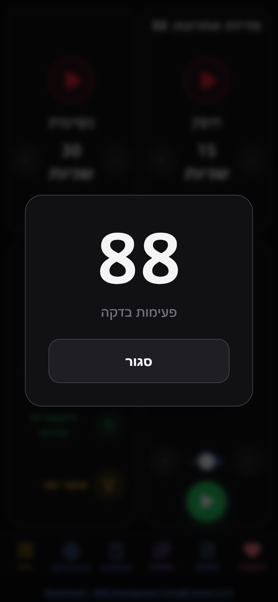
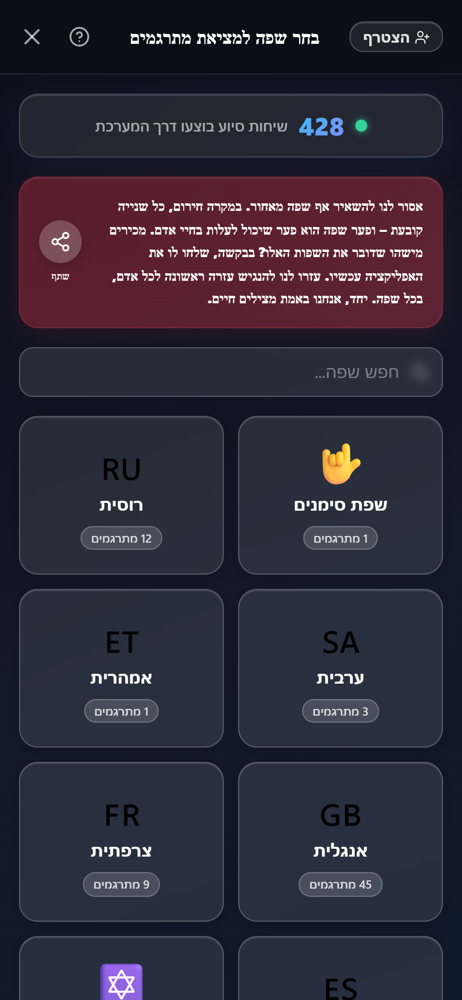
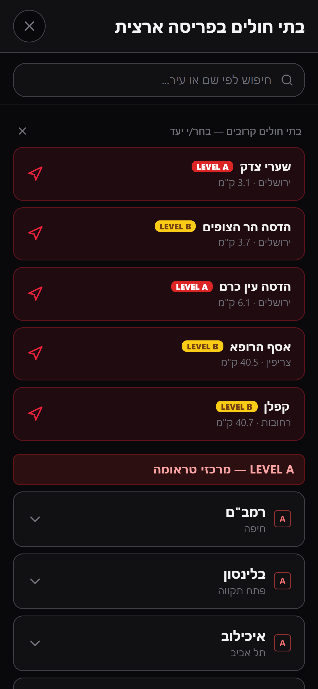
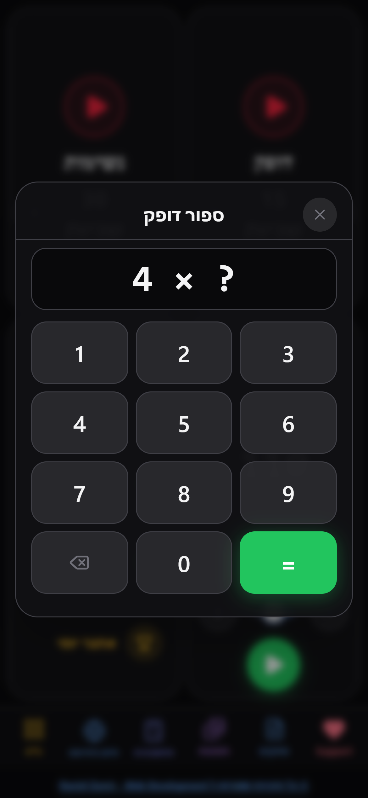

חובש+
חפשו עכשיו בגוגל
חובש פלוס
בהצלת חיים,
חייבים להיותמוכנים להכול.
תמיד.
לכן בנינו את
חובש+
כלי אחד, עוצמתי,שתמיד איתכם.
מטרונום החייאה,שמתעד כל שוק.
מצלמים קופסת תרופה,ומקבלים תשובה,עם מידע על התרופה.
מתקשים בשפהמול המטופל?
מתנדב בשפה שלו,בלחיצה.
כוויות,
מינונים,
גלזגו,
יחד עם עוד מגוון מחשבונים.
הכול בכיס.
בית החולים הקרוב,בלחיצת כפתור.
עובד ללא חיבור לרשת.
חינם לגמרי.
בלי פרסומות.
ועוד הרבה פיצ'רים,שיעזרו לכם להיותחובשים מקצועיים יותר.
וגם ערוץ ווטסאפ,
עם סרטונים רפואיים,
תכני העשרה
ופרוצדורות מעניינות.